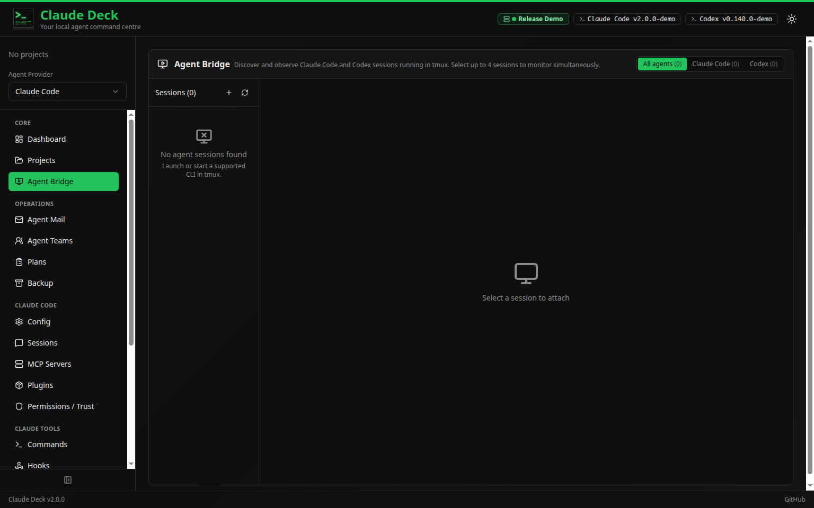
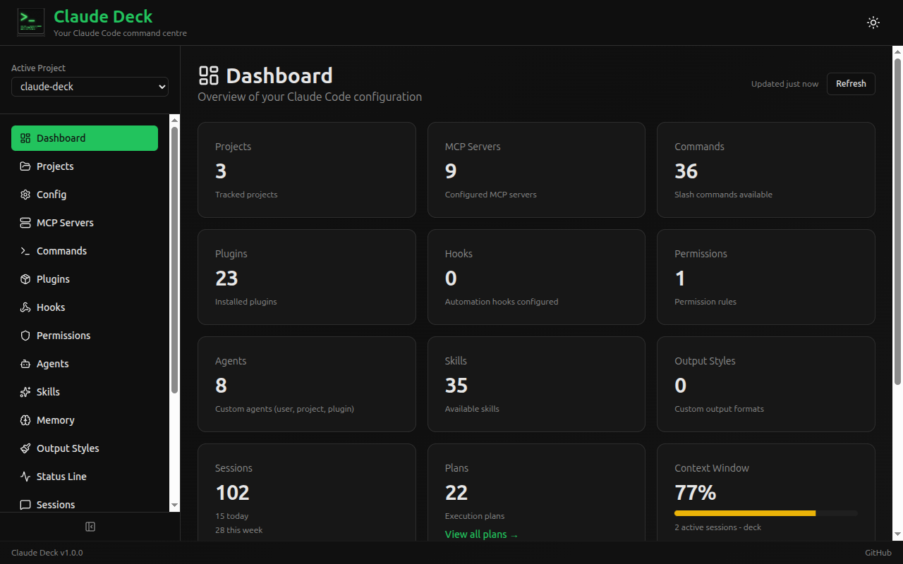
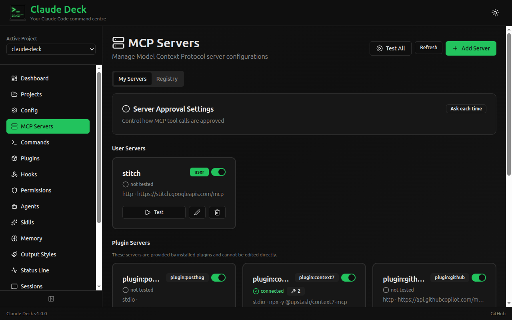

Visual configuration and live session control for Claude Code
Claude Deck gives you a visual control panel for Claude Code: manage configuration, inspect usage and transcripts, and use CC Bridge to monitor and interact with live Claude Code tmux sessions from the browser.
Visual configuration for Claude Code instead of juggling command-line edits and scattered settings
Track MCP servers, usage, transcripts, commands, hooks, and more in one place
CC Bridge brings live Claude Code tmux sessions into the browser
Important: Claude Deck works with your real local Claude Code files
It is not a mock viewer. Changes made in the UI can change your actual Claude Code setup. Review changes carefully and create a backup before major edits. Claude Deck is local-only, with no account and no telemetry.
Claude Deck is most useful if you want a visual layer over Claude Code and especially if CC Bridge matches how you actually work.
When you’d rather inspect and change setup in a UI than bounce through commands, flags, and scattered config surfaces.
When Claude Code already lives in tmux and you want live browser access to monitor and interact with sessions.
When you want cost tracking, session history, and a clearer operational view around Claude Code.
When MCP servers, commands, hooks, agents, and sessions add up enough that a control panel starts making sense.
Most people are not hand-editing Claude Code JSON files all day. The real comparison is visual control panel versus command-line-only workflow.
Claude Deck becomes useful when you want to configure Claude Code visually, understand what is active, inspect usage and transcripts, and use CC Bridge to work with live tmux sessions from the browser.
A visual interface for all your Claude Code configurations.



Everything you need to manage Claude Code configurations in one place.
Add, test, and manage MCP server connections with a visual interface.
Click to preview
Visual editor for all Claude Code settings with merged and individual views.
Click to preview
Track tokens, costs, and billing with detailed charts and breakdowns.
Click to preview
Browse, create, and manage slash commands and plugins visually.
Click to preview
Configure automation hooks and access control rules visually.
Click to preview
Browse conversation history with full message and tool use details.
Click to preview
Plus agents, skills, memory, output styles, status line, backup & restore, and more.
Clone the repository and start the development servers.